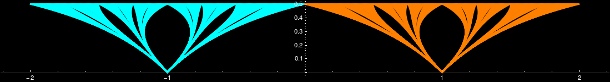

Research
My research interests lie in complex dynamical systems, iterated function systems, symbolic dynamics, fractal geometry, aperiodic tilings & quasicrystals.
Acacia Trees (modified version of Christiane's Hair) a set built by stacking Cantor sets with continuously varying scaling factors.
Graduate Research
My research project concerns the sets pictured below.


Colored in dark blue is \(\mathcal{M}\) which is the closure of the set of roots in \(\mathbb{D}\) of polynomials with coefficients in \(\lbrace-1,0,+1\rbrace\). In magenta is \(\mathcal{M}_0\) which is the closure of the set of roots in \(\mathbb{D}\) of with coefficients in \(\lbrace-1,+1\rbrace\), commonly known as Littlewood’s polynomials. Both are bounded outside by the unit circle, and usually depicted in overlap as \(\mathcal{M}_0\subset\mathcal{M}\). Interest in these sets spiked recently after G. Tiozzo, inspired by a conjecture of W.P. Thurston, proved that \(\mathcal{M}_0\) equals the closure in \(\mathbb{D}\) of the set of Galois conjugates of entropies of superattracting real quadratic polynomials. From a different point of view, the set \(\mathcal{M}\) is the connectedness locus of the family of iterated function systems (IFS) \( \langle \mathfrak{s}_-(z), \mathfrak{s}_+(z)\rangle=\langle \lambda z-1, \lambda z+1\rangle \) namely the set of parameters \( \lambda \) for which the associated limit set of the IFS is connected.
The limit set is the unique invariant compact set satisfying \( \mathsf{A}_\lambda=\mathfrak{s}_-(\mathsf{A}_\lambda)\cup\mathfrak{s}_+(\mathsf{A}_\lambda) \). Some examples of \( \mathsf{A}_\lambda \) are in the gif on the top right. The cyan colored set is \(\mathfrak{s}_-(\mathsf{A}_\lambda)\), the "minus" copy of \( \mathsf{A}_\lambda\); while the orange one is \(\mathfrak{s}_+(\mathsf{A}_\lambda)\), the "plus" copy of \( \mathsf{A}_\lambda\). As you can see these attractors are symmetric with respect to center \(0\), and sometimes this point is not part of the attractor. You may also notice how the plus and minus copies can touch either at a point or segments, or overlap substantially (the yellow part). In the case the overlap is nonempty, it is easy to prove that \(\mathsf{A}_\lambda\) is connected (a little harder, but possible, to show locally connected). In the opposite case, the attractor is totally disconnected and, hence, homeomorphic to a Cantor set. It can be shown then that
\(\mathcal{M}=\left\{ \lambda\in\mathbb{D}~|~\mathsf{A}_\lambda\text{ is connected} \right\}~\text{ and }~\mathcal{M}_0=\left\{\lambda\in\mathbb{D}~|~0\in\mathsf{A}_\lambda\right\}\).
The two sets are not at all equal! Notice the contrast with what happens with the Mandelbrot set.
These sets were first introduced by M.F. Barnsley and A.N. Harrington in the mid 1980s. In 1988-1992 Bousch proved that \(\mathcal{M}\) and \(\mathcal{M}_0\) are connected, and locally connected. In 2002, C. Bandt proved the existence of a hole in \(\mathcal{M}\), and conjectured that there are in fact infinitely many. In 2014, D. Calegari, S. Koch, and A. Walker gave a positive answer to the conjecture, for both \(\mathcal{M}\) and \(\mathcal{M}_0\), and in fact constructed infinite sequences of holes accumulating at certain parameters in \(\partial\mathcal{M}\). These are buried points of \(\partial\mathcal{M}\), i.e. not path accessible from the complement \(\mathbb{D}\setminus\mathcal{M}\).
In my thesis, I concentrated on boundary parameters that are not buried. I gave sufficient conditions on \(\lambda\in\partial\mathcal{M}\) or \(\partial\mathcal{M}_0\) to guarantee it is accessible. Moreover, I found parameters in \(\partial\mathcal{M}\) accessible from the largest connected component of \(\mathbb{D}\setminus\mathcal{M}\), giving a general method to find other parameters on this boundary.
Undergraduate Research
During my studies at Boston University (BU) I was working under the supervision of Dr. Robert L. Devaney. Our main interest was the family of map \(f_\lambda(z)=z^n + \frac{\lambda}{z^n}\) when \(n\geq2\) and \(\lambda\in\mathbb{C}\). The parameter (\(\lambda\)) plane when \(n=2\) is depicted above. The shades of orange represent how fast the iterates of \(\nu_\lambda\), the image of the critical points, escape to infinity; colored in black are those parameters \(\lambda\) for which the orbit of \(\nu_\lambda\) remains bounded. Below there is a picture of the dynamical plane (or filled Julia set) when \(\lambda\) is taken from the biggest black region in the parameter plane. Again the colors represent the orbit of \(f_\lambda(z)\): blue implies \(f_\lambda^n(z)\to\infty\), while black \(f_\lambda(z)^n\not\to\infty\).
The results appeared in three articles, two of which have been published in the Pi Mu Epsilon journal and Fundamenta Mathematicae, while the other is awaiting publication in Topology Preceedings.
I presented this work at three conferences:
- at the Symposium for Undergraduate in the Mathematical Sciences (SUMS) hosted by Brown University on March 2013,
- at the Midwest Dynamical System Conference hosted by University Illinois at Urbana-Champaign on November 2013 (poster),
- at the 48th Spring Topology and Dynamics Conference hosted by University of Richmond on March 2014.
I have also participated in a Research Experience for Undergraduate (REU) at University of Minnesota Twin Cities (UMN). Here I worked under the guidance of Dr. Arnd Scheel and his, at the time, postdoctoral student Dr. Matt Holzer. The results appeared in the article published in the SIAM Undergraduate Research Online journal.
Publications & Preprints
| Pure Math | Applied Math | History of Math | Electrical Engineering |
|---|
- Pérez, R. A. and Silvestri, S. A Catalog of Geometric Progression References in
the Historical Record.
-in preparation - Pérez, R. A. and Silvestri, S. Accessibility of the Boundary of the Thurston Set. submitted
-abstract -[preprint] - Alibeik, M., Nezamuddin, O., Rubin, M., Wheeler, N., Silvestri, S., dos Santos, E. Airgap-less electric motor: A solution for high-torque low-speed applications. IEEE International Electric Machines and Drives Conference (IEMDC), pp.1-8 (2017) -abstract -[preprint]
- Blanchard, P., Cuzzocreo, D., Devaney, R. L., Fitzgibbon, E., and Silvestri, S. A Dynamical Invariant for Sierpiński Cardioid Julia Sets. Fundamenta Mathematicae, 226, pp.253-277 (2014). -abstract -[preprint]
- Fitzgibbon, E. and Silvestri S. Rational Maps: Julia Sets of Accessible Mandelbrot Sets are not Homeomorphic. To appear in Topology Proceedings. -abstract -[preprint]
- Silvestri, S. Non Homeomorphic Julia Sets of Singularly Perturbed Rational Maps. Pi Mu Epsilon Journal, 13:10 (2014). -abstract -[preprint]
- Bose, K., Cox, T., Silvestri S., and Varin, P. Invasion Front and Pattern Formation in a Model of Chemotaxis in One and Two Dimensions. SIAM Undergraduate Research Online 6 (2013). -abstract -[pdf]
My Erdös number is 4.